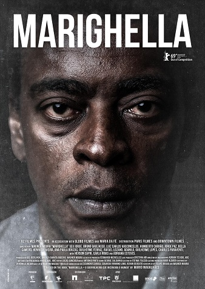

Filmes de Ação Nacionais
Tropa de Elite
Nascimento, capitão da Tropa de Elite do Rio de Janeiro, é designado para chefiar uma das equipes que tem como missão apaziguar o Morro do Turano. Ele precisa cumprir as ordens enquanto procura por um substituto para ficar em seu lugar. Em meio a um tiroteio, Nascimento e sua equipe resgatam Neto e Matias, dois aspirantes a oficiais da PM. Ansiosos para entrar em ação e impressionados com a eficiência de seus salvadores, os dois se candidatam ao curso de formação da Tropa de Elite. | Cidade de Deus
Buscapé é um jovem pobre, negro e sensível, que cresce em um universo de muita violência. Ele vive na Cidade de Deus, favela carioca conhecida por ser um dos locais mais violentos do Rio. Amedrontado com a possibilidade de se tornar um bandido, Buscapé é salvo de seu destino por causa de seu talento como fotógrafo, o qual permite que siga carreira na profissão. É por meio de seu olhar atrás da câmera que ele analisa o dia a dia da favela em que vive, onde a violência aparenta ser infinita. |
MarighellaComandando um grupo de jovens guerrilheiros, Carlos Marighella tenta divulgar sua luta contra a ditadura para o povo brasileiro, mas a censura descredita a revolução. Seu principal opositor é Lúcio, policial que o rotula como inimigo público do país. |
Cabras da PesteBruceuilis, um policial do interior do Ceará, viaja até São Paulo para resgatar Celestina, uma cabra considerada patrimônio de sua cidade. Na capital paulista, ele encontra Trindade, um escrivão da polícia que decide sair do marasmo de seu trabalho e ajudá-lo na aventura, mesmo não sendo sua especialidade. |
O Doutrinador
Um vigilante mascarado surge para atacar a impunidade que permite que políticos e donos de empreiteiras enriqueçam às custas da miséria e do trabalho da população brasileira. A história do homem por trás do disfarce de Doutrinador envolve uma jornada pessoal de vingança na qual um agente traumatizado decide fazer justiça com as próprias mãos. |
Medida Provisória
Em uma iniciativa de reparação pelo passado escravocrata, o governo brasileiro decreta uma medida provisória e provoca uma reação imediata no Congresso Nacional. Os parlamentares aprovam uma medida que obriga os cidadãos negros a se mudar para a África na intenção de retomar as suas origens. A aprovação afeta diretamente a vida do casal formado pela médica Capitú e pelo advogado Antonio, além de seu primo, o jornalista André, que mora com eles no mesmo apartamento. |